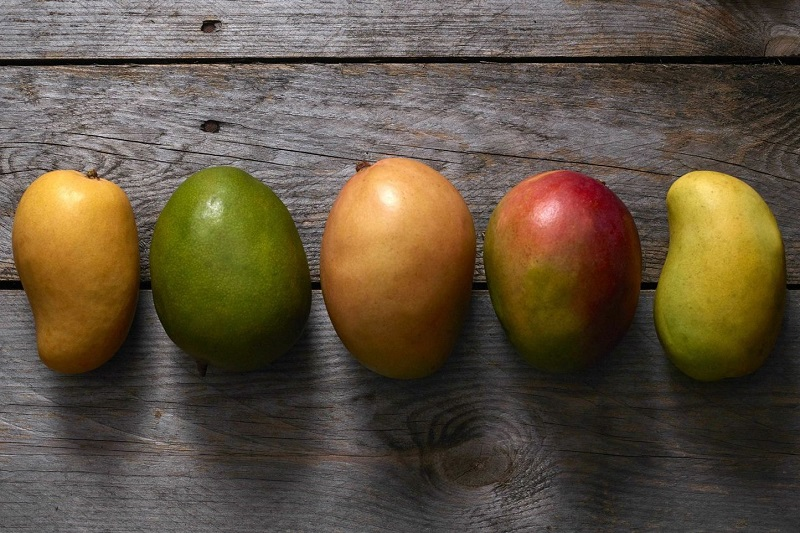
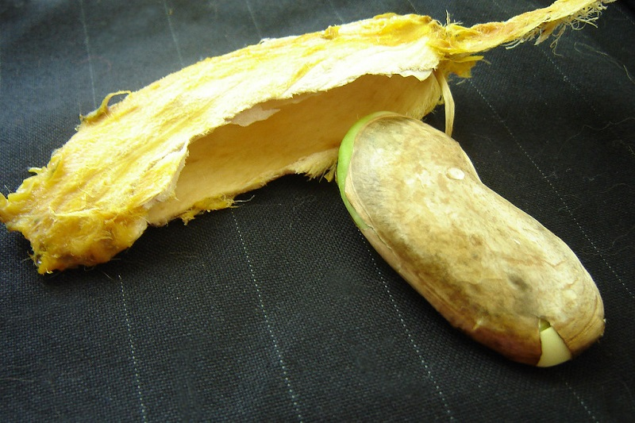
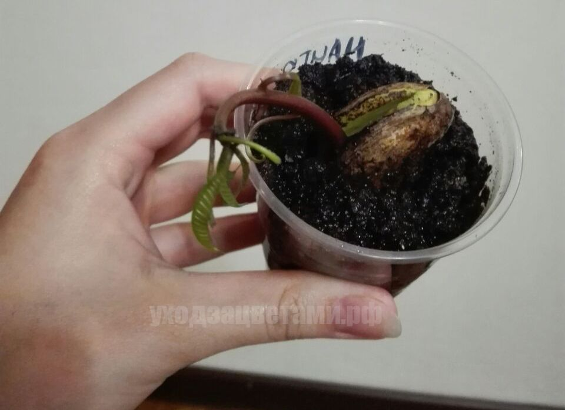
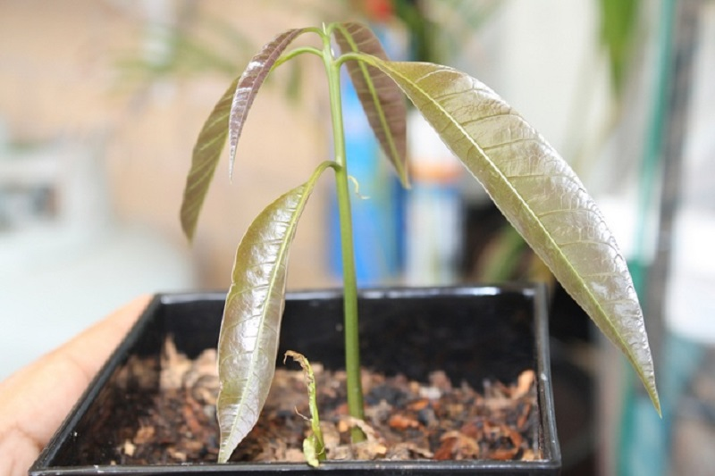

| Главная | Как вырастить лимон | Как вырастить киви | Как вырастить хурму | Как вырастить авокадо | Как вырастить манго |
Так здорово вырастить собственное манго из косточки в домашних условиях! Для посадки подойдёт фрукт даже из магазина. А если сделать прививку от плодоносящего растения, ваше дерево будет давать урожай каждый год.

Для того, чтобы прорастить косточку манго, выбирайте полностью спелые и упругие плоды.
Извлеките косточку и вскройте её как устрицу, или аккуратно разрежьте ножницами по краю. Внутри находится зародыш, покрытый коричневой плёнкой. Обязательно удалите её, чтобы в процессе проращивания не было гниения. Если вам повезёт, у семечка уже будет проклюнувшийся корень.

После извлечения семечко полезно обработать фунгицидом, чтобы защитить от плесени.
Оберните семечко в бумажную или тряпичную салфетку и хорошо смочите водой. Затем поместите в прозрачный полиэтиленовый пакет и уберите в теплое светлое место. Мы рекомендуем ежедневно проверять его, чтобы не допустить появление грибка. Также необходимо раз в три дня менять салфетки и пакет. Следите, чтобы салфетка оставалась влажной.
Примерно через одну-три недели вы увидите корешок, который начнёт проклёвываться с острого края зародыша. Семядоли с широкого тупого края начнут разделяться и между ними покажется росток — это и есть наше будущее деревце.

Чтобы посадить косточку манго, вам понадобится глубокий горшок, дренаж, специальная земля и стеклянная банка.
1. На дно горшка насыпьте дренаж — это необходимо, чтобы корни дерева не загнили. Используйте керамзит, гравий, вермикулит или уголь. Слоя в 3-4 сантиметра будет достаточно;
2. Насыпьте в горшок землю и сделайте ямку так, чтобы семечко легко вошло туда примерно на ¾;
3. Поместите семечко в землю острым концом вниз. Разделившиеся семядоли с молодым ростком должны оказаться над землёй;
4.Слегка утрамбуйте почву и полейте ваше деревце;
5.По желанию накройте его банкой или прозрачным пластиковым стаканом чтобы создать эффект теплицы. Это помогает росточку безопасно набираться сил в комфортных условиях. Берегите его от прямых солнечных лучей.

Если вы любите горшечные растения, мы с удовольствием доставим вам в любой город лучшие экземпляры из каталога комнатных цветов! Выбирайте среди цветущей экзотики, суккулентов или классических домашних роз.
Примерно через две недели у ростка появятся первые листья. К этому моменту «теплицу» можно удалить.
Переставьте горшок на солнце и ежедневно щедро опрыскивайте растение. Поливать лучше понемногу, раз в три дня, по мере высыхания почвы.
Помните, что растение не любит сильных перепадов температур, холода и сквозняков. Оптимальная температура для выращивания — 25°С.